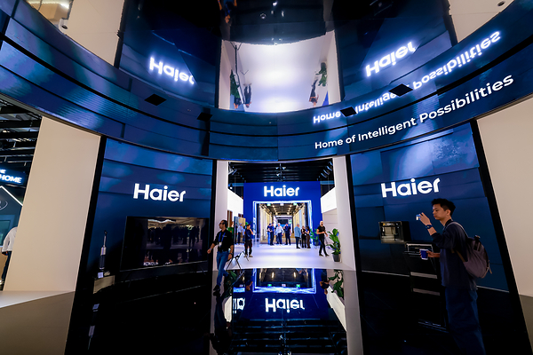

厨房智能硬件 · 竞品动态
海尔 IFA 展台：AI 不只控制设备，而是理解家庭场景
从单品语音控制，走向空间、设备和用户状态的协同。

DIGITIMES在9月9日刊发PRNewswire稿件，披露海尔在IFA 2026展示AI驱动的智能家居生态。展台主题强调互联产品理解并适应日常需求，覆盖厨房、洗护和整屋空间。
这类“AI家电生态”不再只比拼某个屏幕或语音指令，而是在厨房、客厅和洗护之间建立场景联动。其价值仍需回到真实家庭：识别是否准确、联动是否少打扰、跨品类维护是否可持续。
DIGITIMES / PRNewswire · 2026-09-09PR Newswire 原始通稿 · 2026-09-059/9媒体发布 · IFA展期内容 · 品牌通稿口径
编辑评分 90/100 · 配图自评 92/100